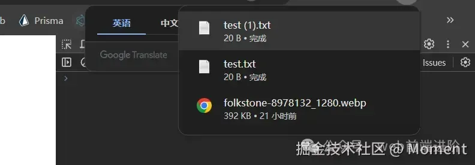

HaoTian · 2024-11-28 21:39:31
在 JavaScript 中，Blob（Binary Large Object）对象用于表示不可变的、原始的二进制数据。它可以用来存储文件、图片、音频、视频、甚至是纯文本等各种类型的数据。Blob 提供了一种高效的方式来操作数据文件，而不需要将数据全部加载到内存中，这在处理大型文件或二进制数据时非常有用。
我们可以使用 new Blob() 构造函数来创建一个 Blob 对象，语法如下：
const blob = new Blob(blobParts, options);
例如：
const blob = new Blob(["Hello, world!"], { type: "text/plain" });
Blob 对象主要有以下几个属性：
console.log(blob.size); // 输出 Blob 的大小
console.log(blob.type); // 输出 Blob 的 MIME 类型
Blob 对象提供了一些常用的方法来操作二进制数据。
slice([start], [end], [contentType])该方法用于从 Blob 中提取一部分数据，并返回一个新的 Blob 对象。参数 start 和 end 表示提取的字节范围，contentType 设置提取部分的 MIME 类型。
const blob = new Blob(["Hello, world!"], { type: "text/plain" });
const partialBlob = blob.slice(0, 5);
该方法将 Blob 的内容读取为文本字符串。它返回一个 Promise，解析为文本数据。
blob.text().then((text) => {
console.log(text); // 输出 "Hello, world!"
});
该方法将 Blob 的内容读取为 ArrayBuffer 对象，适合处理二进制数据。它返回一个 Promise，解析为 ArrayBuffer 数据。
const blob = new Blob(["Hello, world!"], { type: "text/plain" });
blob.arrayBuffer().then((buffer) => {
console.log(buffer);
});
该方法将 Blob 的数据作为一个 ReadableStream 返回，允许你以流的方式处理数据，适合处理大文件。
Blob 对象在很多场景中非常有用，尤其是在 Web 应用中处理文件、图片或视频等二进制数据时。以下是一些常见的使用场景：
你可以通过 Blob 创建文件并生成下载链接供用户下载文件。
const blob = new Blob(["This is a test file."], { type: "text/plain" });
const url = URL.createObjectURL(blob); // 创建一个 Blob URL
const a = document.createElement("a");
a.href = url;
a.download = "test.txt";
a.click();
URL.revokeObjectURL(url); // 释放 URL 对象
当我们刷新浏览器的时候发现是可以自动给我们下载图片了：
你可以通过 FormData 对象将 Blob 作为文件上传到服务器：
const formData = new FormData();
formData.append("file", blob, "example.txt");
fetch("/upload", {
method: "POST",
body: formData,
}).then((response) => {
console.log("File uploaded successfully");
});
通过 FileReader API 可以将 Blob 对象读取为不同的数据格式。举例来说，你可以将 Blob 读取为图片并显示在页面上：
<!DOCTYPE html>
<html lang="en">
<head>
<meta charset="UTF-8" />
<meta name="viewport" content="width=device-width, initial-scale=1.0" />
<title>Document</title>
</head>
<body>
<input type="file" id="fileInput" accept="image/*" />
<div id="imageContainer"></div>
<script>
const fileInput = document.getElementById("fileInput");
const imageContainer = document.getElementById("imageContainer");
fileInput.addEventListener("change", function (event) {
const file = event.target.files[0];
if (file && file.type.startsWith("image/")) {
const reader = new FileReader();
reader.onload = function (e) {
const img = document.createElement("img");
img.src = e.target.result;
img.style.maxWidth = "500px";
img.style.margin = "10px";
imageContainer.innerHTML = "";
imageContainer.appendChild(img);
};
reader.readAsDataURL(file);
} else {
alert("请选择一个有效的图片文件。");
}
});
</script>
</body>
</html>
有时你可能需要将 Blob 转换为 Base64 编码的数据（例如用于图像的内联显示或传输）。可以通过 FileReader 来实现：
const reader = new FileReader();
reader.onloadend = function () {
const base64data = reader.result;
console.log(base64data); // 输出 base64 编码的数据
};
reader.readAsDataURL(blob); // 将 Blob 读取为 base64
File 是 JavaScript 中代表文件的数据结构，它继承自 Blob 对象，包含文件的元数据（如文件名、文件大小、类型等）。File 对象通常由用户通过 <input type="file"> 选择文件时创建，也可以使用 JavaScript 构造函数手动创建。
<input type="file" id="fileInput" />
<script>
document.getElementById("fileInput").addEventListener("change", (event) => {
const file = event.target.files[0];
console.log("文件名:", file.name);
console.log("文件类型:", file.type);
console.log("文件大小:", file.size);
});
</script>
我们可以使用 File 的方式来访问用户上传的文件，我们也可以手动创建 File 对象：
const file = new File(["Hello, world!"], "hello-world.txt", {
type: "text/plain",
});
console.log(file);
File 对象继承了 Blob 对象的方法，因此可以使用一些 Blob 对象的方法来处理文件数据。
const blob = file.slice(0, 1024); // 获取文件的前 1024 个字节
file.text().then((text) => {
console.log(text); // 输出文件的文本内容
});
file.arrayBuffer().then((buffer) => {
console.log(buffer); // 输出文件的 ArrayBuffer
});
const stream = file.stream();
Blob 是纯粹的二进制数据，它可以存储任何类型的数据，但不具有文件的元数据（如文件名、最后修改时间等）。
File 是 Blob 的子类，File 对象除了具有 Blob 的所有属性和方法之外，还包含文件的元数据，如文件名和修改日期。
你可以将 File 对象看作是带有文件信息的 Blob。
const file = new File(["Hello, world!"], "hello.txt", { type: "text/plain" });
console.log(file instanceof Blob); // true
二者在文件上传和二进制数据处理的场景中被广泛使用。Blob 更加通用，而 File 更专注于与文件系统的交互。